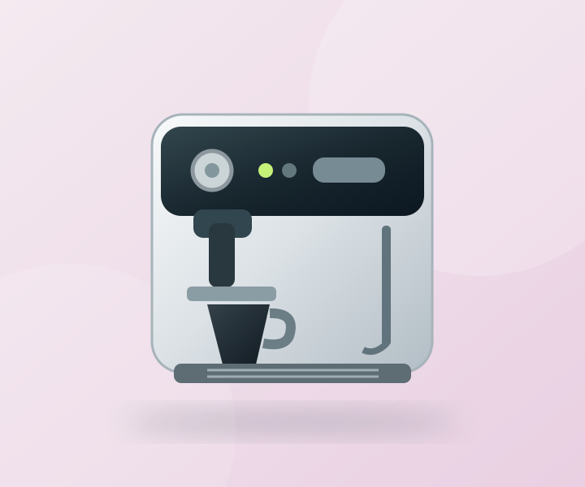

Мінімальні сліди
Повністю функціональний, протестований. Можливі незначні недоліки упаковки чи зовнішнього вигляду.
✓ ПеревіреноКлієнтські повернення та стокова техніка для дому. Показуємо реальний стан, результати перевірок і недоліки — щоб ти розумів, що купуєш.

Окремо фіксуємо зовнішній вигляд і працездатність.
Додаємо конкретні результати тестування кожної позиції.
Уцінка з урахуванням стану й відомих дефектів.
Демонстраційний каталог із різними станами, комплектацією й описом перевірок.
Літерна оцінка — підказка, а не заміна фактичного опису конкретного товару.
Повністю функціональний, протестований. Можливі незначні недоліки упаковки чи зовнішнього вигляду.
✓ ПеревіреноФункції перевірено, але можуть бути помітні подряпини або відсутні другорядні аксесуари.
✓ ПеревіреноЄ підтверджений дефект або неповна працездатність. Продається як товар для ремонту чи запчастин.
! Є дефектВажливо: A/B/C — власна система цього навчального прототипу. Це не офіційна шкала Amazon. Реальні умови продажу мають містити індивідуальний опис товару та відповідати законодавству.
Вторинний ринок працює краще, коли продавець чесно пояснює, що покупець отримає.
Обрати технікуВизначаємо модель, комплектацію й видимі пошкодження поверненого товару.
Фіксуємо, що саме вдалося перевірити, і які несправності виявлено.
Показуємо стан A/B/C, дефекти, комплектацію та розумну ціну.
У демоверсії можна додати товар у кошик і переглянути підсумок без оплати.
KOLO — концепція невеликого українського re-commerce магазину, який спеціалізується на клієнтських поверненнях побутової техніки. Його перевага — зрозумілий каталог неідеальних товарів.
Сайт створено як лабораторний AI-проєкт. Представлені товари, результати тестів, наявність і ціни — вигадані для демонстрації інтерфейсу. Це не діючий торговий майданчик.
Поширені запитання ↗Головні питання про прототип.
Ні. Це навчальний прототип магазину. Кошик працює, але оплати, доставки та реального оформлення замовлень немає.
Усі картки змодельовані для навчальної демонстрації. Вони не відображають складські залишки, реальну діагностику чи комерційні пропозиції.
У нашій концепції A/B означають, що конкретні функції протестовано. Покупцеві слід читати саме перелік перевірок і відомих дефектів у картці товару.
Це техніка з відомим дефектом, яка може бути непридатною до звичайної експлуатації. Вона пропонується для ремонту чи як джерело запчастин.